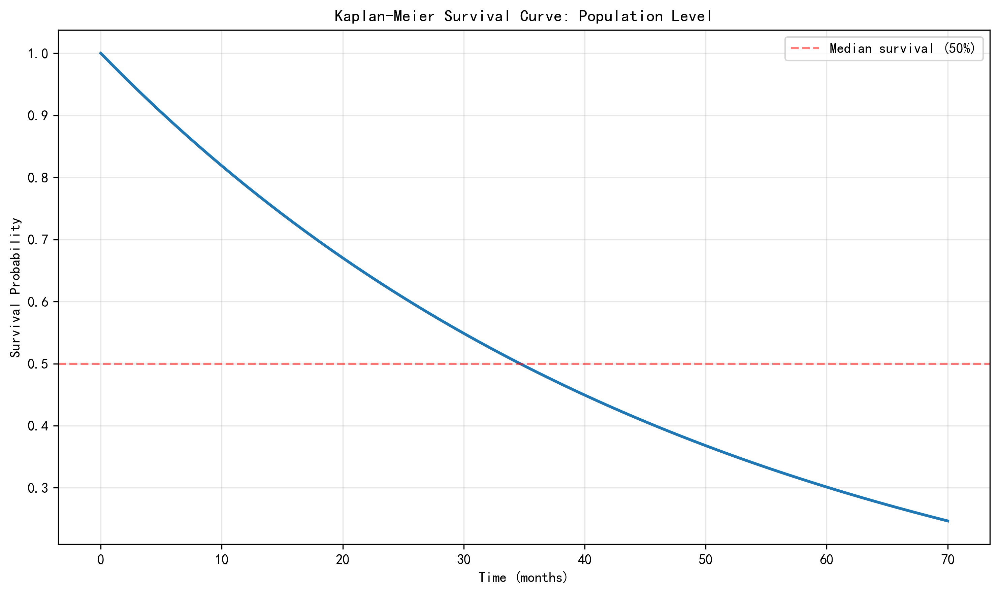
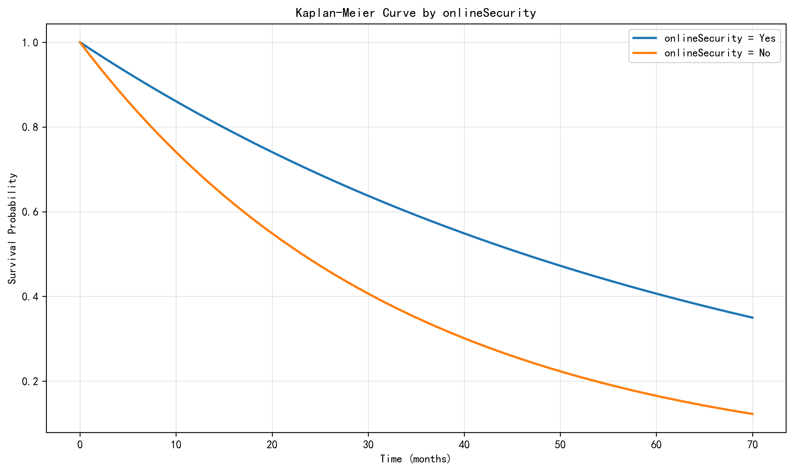
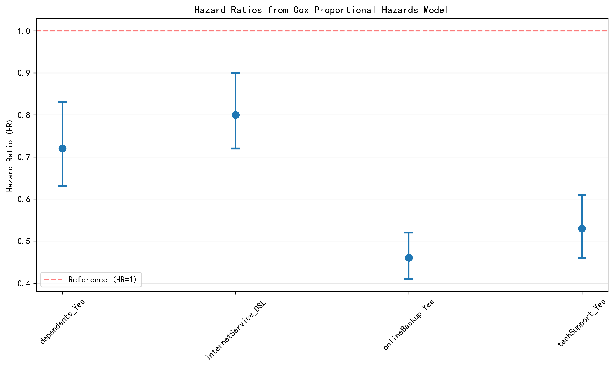
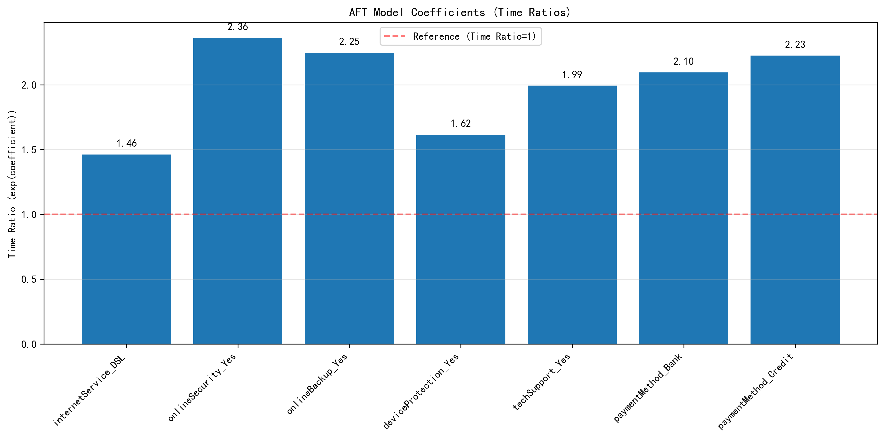
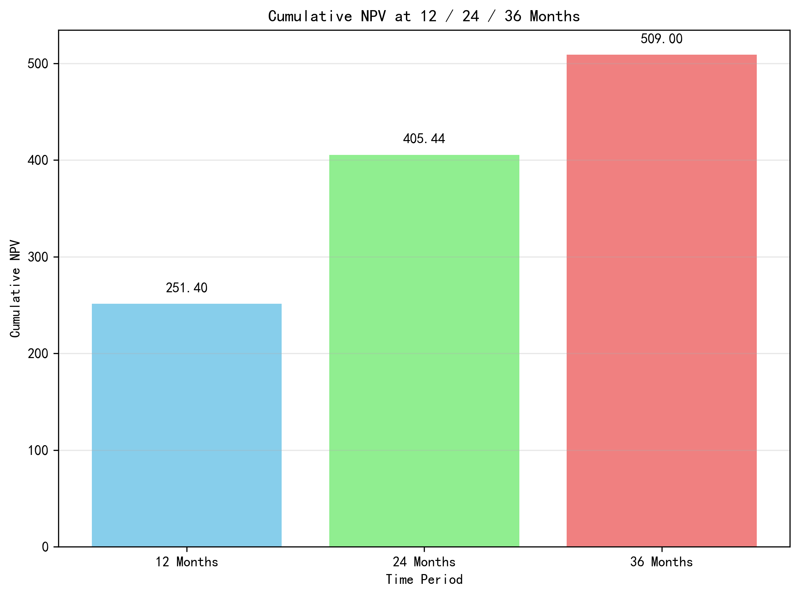
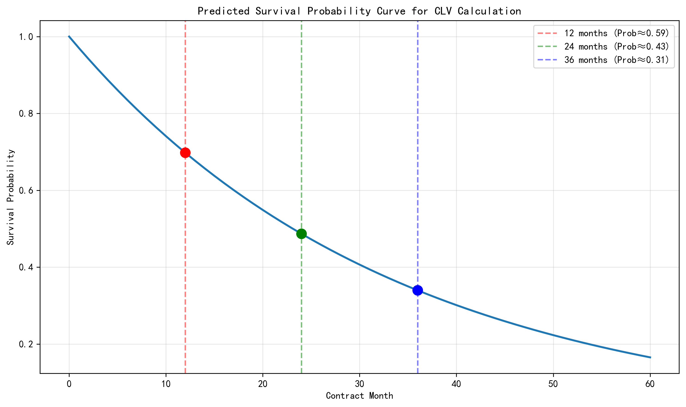

Project Overview
This project reproduces the Databricks survival-analysis accelerator in a local environment and rewrites the original workflow into a single annotated notebook. The pipeline covers data ingestion, Bronze/Silver table construction, survival modeling, customer lifetime value (CLV) estimation, and a separate Text-to-SQL experiment.
Data and Reproduction Scope
- Original IBM Telco Customer Churn dataset: 7043 records
- Filtered analysis cohort (month-to-month customers with internet service): 3351 records
- Observed churn events: 1556
- Right-censored observations: 1795
- Storage fallback used in local reproduction: Parquet
In the survival setup, tenure is treated as the duration variable and
churn as the event indicator.
Part 1: PySpark Reproduction
The original Databricks notebooks were reorganized into a single local notebook with Chinese annotations. To make the workflow portable, Databricks-specific components were replaced with a standard SparkSession, local file paths, and a Delta-to-Parquet fallback strategy.
The reproduction preserved the overall logic of the original workflow: data download, explicit schema definition, Bronze/Silver layer construction, table registration, and downstream model-ready data generation.
Part 2: Survival Analysis Results
Kaplan–Meier Estimation
The overall Kaplan–Meier survival curve gives a median survival time of 34.0 months. The curve falls relatively quickly in the first year, suggesting that churn risk is concentrated in the early customer lifecycle.

Figure 1. Overall Kaplan–Meier survival curve.
Group Comparison
Log-rank testing shows that gender is not statistically significant,
while onlineSecurity is highly significant. This indicates that service-related features
are much more informative for retention than simple demographic labels.

Figure 2. Survival curves grouped by onlineSecurity.
Cox Proportional Hazards Model
In the Cox model, the estimated hazard ratios are:
- dependents_Yes: 0.72
- internetService_DSL: 0.80
- onlineBackup_Yes: 0.46
- techSupport_Yes: 0.53
All four are below 1, which means they are associated with lower churn risk. The strongest protective effects come from online backup and technical support.

Figure 3. Hazard ratios from the Cox proportional hazards model.
AFT Model
A Log-Logistic AFT model was also fitted. Its conclusions are broadly consistent with the Cox model: online security, online backup, tech support, and some automatic payment methods are associated with longer expected customer survival time.

Figure 4. Key time-ratio coefficients from the AFT model.
Part 3: From Survival to CLV
The project further translates survival probabilities into business value. Using predicted survival curves, expected monthly profit is discounted into cumulative net present value (NPV).
- 12-month cumulative NPV: 251.40
- 24-month cumulative NPV: 405.44
- 36-month cumulative NPV: about 509
This shows how churn modeling can be interpreted not only as a retention problem, but also as a financial decision-support tool.

Figure 5. Cumulative NPV at 12, 24, and 36 months.

Figure 6. Predicted survival curve used in CLV calculation.
Part 4: Text-to-SQL Experiment
In the final part of the project, GPT was tested on MySQL-based Text-to-SQL tasks. The goal was not only to check whether SQL could run, but whether the generated SQL faithfully matched the user question, the schema, and the data conditions.
Successful Case
For a medium-complexity query asking which payment method had the largest number of churned customers among users whose monthly charge is above the global average, GPT produced correct SQL and returned: Electronic check, 697.
Failure Cases
- Ambiguity: "highest-value customers" was wrongly reduced to the single user with the maximum total charge.
- Schema grounding + dirty data: the model answered from the analysis table instead of the raw table, avoiding totalCharges cleaning issues.
- SQL syntax error:
COUNT(*)was incorrectly written asCOUNT().
The main lesson is that LLMs can perform well when the question is clear and the schema is complete, but error rates increase when ambiguity, dirty data, or complex aggregation are involved.
Conclusion
This coursework demonstrates a full pipeline from distributed data preprocessing to interpretable survival modeling, business-value translation, and LLM-based SQL generation analysis. Across KM, Cox, and AFT models, the most important signals are service-related features such as online security, backup, and technical support. At the same time, the Text-to-SQL section shows that evaluation should consider not only model quality, but also schema completeness, data cleanliness, and validation workflow design.